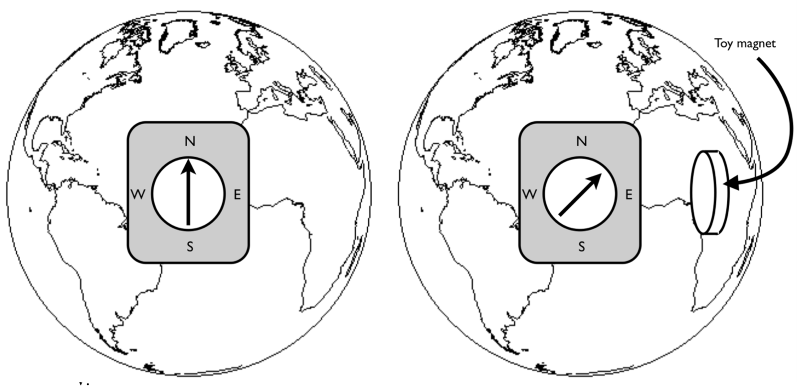

Vi har lært at strømmer lager magnetiske felt, men hvor mye strøm kreves? Vi har nå alle verktøyene som skal til for å finne ut hvor mye bundet strøm det er en i leketøysmagnet som i Geomag magnet. En Geomag magnet består av to neodym magneter som er forbundet med en jernsylinder med høy permeabilitet. Vi skal bruke enkle hjelpemilder og litt fysikk til å finne ut hvor stor bundet strøm som går i denne magneten for å lage det permanente magnetfeltet.
a) Vi skal i denne oppgaven bruke et kompass. Du kan bruke kompasset som er innebygget i telefonen din eller du kan bruke et fysisk kompass hvis du har tilgang til det. Et fysisk kompass består av en magnetisk nål som geomag magneten du har fått låne. Nordsiden av magneten er markert med nord eller ofte med en pil. Nordsiden svarer til den veien det magnetiske momentet \( \vec{m} = I \vec{S} \) peker som er gitt av strømretningen og høyrehåndsregelen. Figuren viser en kompassnål som ligger på jordens overflate der du er nå. Hvor er den magnetiske nord og sydpolen på jorden?
Den magnetiske nordpolen er på sydsiden av jorden.

b) I hvilken retning går strømmen inne i jorden?
c) Hold kompasset/telefonen din slik at det peker mot nord. Hvis du holder magneten opp ved siden av kompasset/telefonen, hvilken pol på leketøysmagneten er nærmest kompasset?
d) Hvilken vei går strømmen i magneten?
e) Hva tror du - er det en bundet overflatestrømm, bundet volumstrøm eller begge deler i magneten?
Det er i hovedsak en overflatestrøm på den krumme sylinderflaten.
f) Ved hjelp av kompasset, magnetetn (og jorda) orietert som i figuren, estimer det magnetiske momentet, \( \vec{m} \). Du trenger å måle avstanden fra magneten til kompasset. Du vil også få bruk for et uttrykk for magnetfeltet fra magneten. For en magnet i origo er magnetfeltet fra magneten i et punkt \( \vec{r} \) tilnærmet gitt som $$ \begin{equation} \vec{B}(\vec{r}) = \frac{\mu_0}{4 \pi} \left[ \frac{3 \rhat (\vec{m} \cdot \rhat) - \vec{m}}{r^3}\right] \, \qquad \, \mu_0 = 4 \pi \times 10^{-7} \text{Tm/A} \tag{1} \end{equation} $$ hvor \( \vec{m} \) er det magnetiske momentet til magneten. Jordas magnetfelt er omtrent \( 5\times 10^{-5} \text{T} \) der hvor vi er.
Diskuter med sidemannen eller gruppen rundt deg hvordan dere kan bruke dette til å bestemme \( \vec{m} \) for magneten. Finn et uttrykk for \( m \) basert på størrelser du kan måle.
\( m = 2 \pi r^3 B_{jorda}/\mu_0 \)
g) Finn et estimat for den bundne strømmen, \( I_b \).
h) Hva blir det magnetiske feltet inne i permanentmagneten?
i) (Ekstraoppgave) Det er også mulig å måle det magnetiske feltet direkte med telefonen din, f.eks. med programmet Phyphox som er tilgjengelig både på iPhone og Android. Hvordan kan vi bruke en slik måling sammen med teorien over for å finne et estimat for den bundne strømmen \( I_b \)?